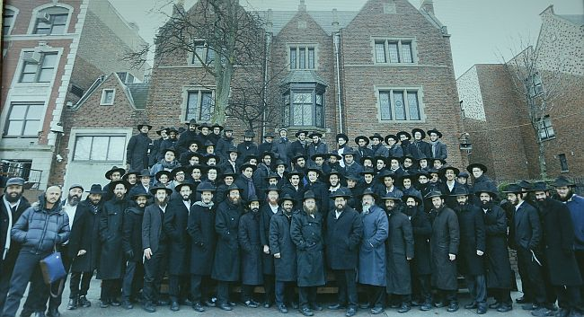

“י’ שבט בעיניי זה יסוד היסודות של חסיד. זה לא עוד תאריך חסידי חגיגי שאנחנו מציינ
“י’ שבט בעיניי זה יסוד היסודות של חסיד. זה לא עוד תאריך חסידי חגיגי שאנחנו מציינים, אלא זהו האל”ף בי”ת. ביום הזה הרבי נהיה לרבי, וביום הזה נהיית לחסיד, ועל כך מושתתת כל הווייתנו וכל נשיאותו של הרבי” * ראיון מאלף עם הגה”ח הרב שלום דובער הנדל, ראש ישיבות “תומכי תמימים” באור יהודה, על מהותו וסגולתו של
“י’ שבט בעיניי זה יסוד היסודות של חסיד. זה לא עוד תאריך חסידי חגיגי שאנחנו מציינים, אלא זהו האל”ף בי”ת. ביום הזה הרבי נהיה לרבי, וביום הזה נהיית לחסיד, ועל כך מושתתת כל הווייתנו וכל נשיאותו של הרבי” * ראיון מאלף עם הגה”ח הרב שלום דובער הנדל, ראש ישיבות “תומכי תמימים” באור יהודה, על מהותו וסגולתו של יום י’ שבט, ראש השנה להתקשרות, ועל החגיגיות הרבה האופפת אותו ואת תלמידיו סביב יום זה * צילום: שגב פלד

ביום רביעי השבוע (כלומר, יום לפני שקבלתם את השבועון) אמורים להמריא כמאה ושלושים בחורים ואנשי צוות מהישיבה הקטנה והגדולה לחצרות קדשנו כדי לשהות בי’ שבט, “ראש השנה להתקשרות”, במחיצת אבינו רוענו, הרבי מלך המשיח.
כמעט ואי אפשר שלא למשש את ההתרגשות הגדולה השוררת בחלל הישיבה. בכל פינה תלויים שלטים ומודעות המכינים את התלמידים לקראת הנסיעה. לא מדובר בהכנות גשמיות, אלא בהכנות רוחניות לקראת הפגישה עם הרבי. “אנו מדגישים לבחורים כל הזמן, שלא מדובר פה בנסיעה או בטיול, אלא אנחנו נוסעים לרבי לי’ שבט כדי לקבל מחדש את נשיאותו; ולשם כך, צריכים לבוא מוכנים כדבעי”, אומר הרב שלום דובער הנדל, ראש הישיבה.
בימים אלה סיימו הבחורים ‘מבצע תורה’ רחב היקף, שהחל למעשה כבר בתחילת שנת הלימודים. נדמה לי שרק ב’תומכי תמימים’ אור יהודה מתחילים כבר בחודש אלול להתכונן לי’ שבט… במהלך המבצע למדו הבחורים ושיננו מאות ואלפי מאמרים ושיחות של הרבי מתוך חוברות הכנה שהוכנו מראש, ואף נבחנו עליהם.
בחדרו של ראש הישיבה, הרב שלום דובער הנדל, אני פוגש שניים מצוות הישיבה שיושבים עמו ודנים בפרטים האחרונים הקשורים לנסיעה. אינספור סידורים ותיאומים אחרונים.
עד שהרב הנדל יסיים את עיסוקיו, אני יושב ב’זאל’ ומסתכל בדפים המונחים על השולחן. אני מגלה כי מדובר בכמעין מבחנים על שיחות של הרבי שלמדו הבחורים כהכנה לנסיעה. המבחנים מוגשים בשיטה אמריקאית. השאלות מעניינות אותי, ולא פחות גם התשובות. “מה הרבי הריי”צ בעיקר דרש מהחסידים?” לצד השאלה מופיעות כמה אפשרויות לתשובה נכונה. “למה רבותינו נשיאנו טמונים בחוץ לארץ?” מופיעה שאלה נוספת, נקודה שבה הרבי דן בהרחבה בשיחות קודשו ומפיק ממנה לקח - שהרועה אינו עוזב את צאן מרעיתו ונמצא עמם בכל מקום.
למרות העומס הרב המוטל עליו, ניאות הרב הנדל לקבל אותי לשיחה לקראת י’ שבט. הוא מפנה זמן ‘בין לבין’. השיחה עמו נינוחה ורגועה, לא בלי להט חסידי והניצוץ השוכן קבע בעיניו. קולו שקט והחיוך לא מש מפניו. כזה הוא הרב הנדל.
למה פניתי דווקא לרב הנדל? לא רק בגלל החג הגדול האופף את הישיבה שלו, אלא בעיקר כי שמועה שמעתי כי לרב הנדל יש ‘קאך’ מיוחד בנושא של י’ שבט. והנה כבר יש לי שתי סיבות נהדרות לשבת עמו בשיחת קודש בערבו של יום חורפי ומעונן.
“י’ שבט בעיניי, זה יום שבו אנחנו מקבלים את הנשיאות של הרבי מחדש”, הוא פותח ואומר את הנקודה המרכזית שאותה הוא מחדיר שוב ושוב בתלמידיו. “הרי כולנו יודעים כי בשנה הראשונה שלאחר ההסתלקות, הרבי מה”מ לא רצה לקבל את הנשיאות. החסידים מצדם ‘הפכו את העולם’ כדי שהרבי יסכים בכל זאת. אחד מרגעי השיא היה, כאשר כמה ימים לפני י’ שבט תשי”א פרסמו החסידים בעיתון על ההתוועדות הצפויה להתקיים, במהלכה יקבל הרבי על עצמו את ההנהגה. ואז הרבי קרא לרב חודקוב ואמר לו שהוא הולך לפרסם הכחשה בעיתון. בעקבות זאת נכנסו כמה מזקני החסידים לרבי והתחננו בפניו שלא יעשה זאת”.
זהו מקרה ידוע. מה אתה למד מהסיפור הזה?
“הרבי מצד עצמו לא רצה לקבל את הנשיאות, והחסידים נדרשו לעבוד ולהתייגע כדי ‘לשכנע’ את הרבי שיקבל על עצמו את הנשיאות. זה לא בא מעצמו”.
למה כוונתך “לעבוד ולהתייגע”?
“העובדה שחסידים בכל מקום בעולם שלחו לרבי מכתבי התקשרות, ובמכתבים אלו הם למעשה מסרו לרבי את כל הרצונות שלהם, את המחשבה דיבור ומעשה שלהם. מדובר בוויתור עצמי מוחלט ובנתינה עצמית בלתי מתפשרת לרבי. כלומר, הם עשו פעולות כדי לשכנע, עד כמה שאפשר לומר בלשון זו, שהלמעלה יסכים לקבל את בקשת ה’למטה’ לשאת את עול ההנהגה והנשיאות.
“כך אז וכך בכל שנה הענינים הללו נזכרים ונעשים ונפעלים מחדש”.
האם יש שינוי או חידוש במימד ההתקשרות שלנו לרבי ביום זה, בין שנה לשנה? ובמילים אחרות: האם בכל שנה זה ריטואל שחוזר על עצמו שצריך לקבל על עצמנו מחדש את הקבלת–עול מול הרבי, או שלכל י’ שבט יש גוון מיוחד משלו?
“בשבוע הבא נציין 67 שנות נשיאות והנהגה של הרבי. אין ספק שי’ שבט של תשע”ז הוא יותר גדול מי’ שבט של תשי”א. כפי שאומר אדמו”ר הזקן בספר התניא על קבלת המלכות של הקב”ה בראש השנה; שבכל שנה ושנה יורד לעולם אור חדש שלא היה כדוגמתו מאז בריאת העולם.
כך גם אפשר לומר כלפי ההשפעה של הרבי אלינו - בכל שנה ההשפעה הולכת וגדלה, ולכן י’ שבט של שנת ה–67 יותר מרומם מי’ שבט של שנת ה–66 לנשיאות. בכל שנה ושנה אנו מקבלים מחדש את הנשיאות באופן הרבה יותר חזק מכפי שהיה בשנה הקודמת.
“על כל בחור בישיבה, כמו גם כל חסיד באשר הוא, לדעת שכמו שבראש השנה, צריך לקבל מחדש את מלכותו של הקב”ה, כך גם עלינו להתבטל ולחזק את ההתקשרות לרבי. איך עושים זאת? בכך שאתה נותן את עצמך לרבי, ומוסר מעצמך לענייניו של הרבי”.
הרב הנדל מוסיף ומחדד: “הנתינה שאנחנו נותנים לרבי לקראת י’ שבט, צריכה להיות מתוך מחשבה מה נכון ומה מתאים שאתן לרבי על פי הכוחות שיש לי, ולא סתם לקבל הידור או הנהגה טובה.
“פעם, לקראת י”א ניסן, קבוצה של בחורים כתבה לרבי שורה של החלטות טובות שקיבלו על עצמם כמתנה לקראת יום הולדתו. הם רצו לשמח את הרבי. בתשובה שהוציא להם הרבי, הוא כתב במילים אחדות, אך חריפות, את דעתו: ‘זה עשיר שמביא מנחת עני’. מה פירוש הדברים? הרבי המשיל זאת לעשיר שהגיע לבית המקדש אך במקום להביא עמו פר שמן לקרבן, הביא תור בן יונה שמתאים לעני. איזה צורה יש לזה?!
“בחור בישיבה לא יכול לקבל את מלכותו של הרבי מתוך החלטה טובה שמתאימה לילד בחדר. גם חסיד שנותן לרבי החלטה טובה לקראת י’ שבט, זה צריך להיות אליבא דנפשיה - מה נכון ומה מתאים לו, ולא להסתפק ב’מנחת עני’.
“אם מדברים על תמימים ב’תומכי תמימים’, הרי שתמים צריך לתת את מנחתו לרבי על ידי התמדה ושקידה ובעבודת התפילה כדבעי, עד שיראו עליו שהוא מקבל על עצמו מחדש את הנשיאות של הרבי”.
•
כשהרב הנדל מדבר על י’ שבט, אי אפשר שלא לראות את החיות המיוחדת שהוא חש כלפי היום הזה. י’ שבט זה חג, ובכל שנה זה חג יותר גדול. נקודה.
אנו נמצאים או–טו–טו בי’ שבט, בשיאם של ימי ההכנה לקראת יו”ד שבט. מהן ההכנות הנדרשות לקראת יום קבלת הנשיאות?
“התמימים נקראים גם ‘חיילי בית דוד’. חייל צריך לדעת שהוא אינו שייך לעצמו אלא לצבא. הדבר הראשון שמלמדים חייל, שמעתה הוא אינו אדם פרטי, אלא הוא רכוש הצבא. על דרך זה תמימים הלומדים ב’תומכי תמימים’, עם הכנסם לישיבה, הם מפסיקים להיות רכוש פרטי אלא רכוש של הרבי ושל רבותינו נשיאנו. כעת אתה חייל של הרבי. ומה נדרש מחייל? בראש ובראשונה לדעת את תפקידו בצבא ולמלא את הפקודות והרצונות של הרמטכ”ל שלך.
“כל בחור בוודאי לומד ובוודאי מתפלל, אך נקודת ההתקשרות של י’ שבט היא, שבחור צריך לשאול את עצמו - עד כמה הוא מרגיש שהוא ממלא באמת את מה שהרבי רוצה ממנו. האם הוא קם בבוקר וחושב מה אני הולך לעשות היום כדי לגרום לרבי נחת רוח? או בקריאת שמע על המיטה, כאשר הוא שם עצמו פנים אל פנים מול הרבי, עליו לשאול את עצמו, האם גרמתי היום לרבי נחת רוח? כשאתה מעמיד את עצמך מול הרבי - כפי שצריך לעשות בקריאת שמע שעל המיטה - אינך יכול לזייף; אתה יודע באמת מה הרבי רוצה ממך, ומה גורם לו נחת רוח ומה לא.
“י’ שבט בעיניי זה יסוד היסודות של חסיד. על יום זה עומד כל מהותו של חסיד. זה לא עוד תאריך חסידי חגיגי שאנחנו מציינים, אלא זהו האל”ף בי”ת. ביום הזה הרבי קיבל את הנשיאות, וביום הזה נהיית לחסיד, ועל כך מושתתת כל הווייתנו וכל נשיאותו של הרבי”.
הרב הנדל מוסיף ומטעים את החגיגיות שלו היום בעיניו:
“אצלנו בישיבה, כל השנים צויין יום י’ שבט כיום חי במיוחד. מבחינתנו זה התאריך הכי חשוב בשנה; עושים ממנו עניין ומקבלים לקראתו החלטות טובות”.
•
י’ שבט בישיבות ‘תומכי תמימים’ באור יהודה, הישיבה הקטנה והישיבה הגדולה, הוא אכן יום נכבד וחשוב. במשך השנים היו פה ושם בחורים שהחליטו לנסוע לרבי ליום זה. “לא פעם היו דיונים אם זה נכון או לא”, מגלה ראש הישיבה הרב הנדל. סך הכל לא פשוט לעזוב באמצע ‘זמן’ לימודים, ולנסוע לרבי.
אולם בשנה שעברה נפל דבר בחיי הישיבה - הישיבה כולה, הקטנה והגדולה, נסעה לשהות אצל הרבי בי’ שבט. איך זה קרה? ובכן, זה קשור לסיפור מרתק שמספר הרב הנדל:
“בשנה שעברה נסעתי לרבי לקראת שבת בראשית. הגעתי לרבי ביום שישי והייתי אמור לשוב ביום ראשון. כשהגעתי לשדה התעופה קנדי, החלו לערוך לי בדיקות ביטחוניות לא שגרתיות. הם הפכו כל בגד ודפדפו בכל דף בספר החת”ת שהיה עמי. בשעת מעשה לא ידעתי על מה ולמה ‘זכיתי’ בכבוד המפוקפק הזה. התחננתי בפניהם שיזדרזו כדי שלא אחמיץ את הטיסה. בפועל, הטיסה התעכבה בגללי עשר דקות, ודקה לפני שהגעתי, ננעלו השערים. מבחינה בטחונית לא היה שייך לפתוח שוב את דלתות המטוס. איחרתי את הטיסה.
“הצטערתי מאד, ורק לאחר הפצרות מרובות קיבלתי כרטיס חזרה חלופי ללא תשלום נוסף.
“באותה תקופה הייתה לי מחשבה על מבצע גדול עבור תלמידי הישיבה ורציתי להתרים פלוני עבור המבצע. בפועל, באותה נסיעה לא ניסיתי להיפגש אתו, וכמובן שהדבר לא יצא לפועל. ואז, בגלל השהייה הנוספת המאולצת שלי, פגשתי בהשגחה פרטית את אותו יהודי בעל אמצעים באופן לא מתוכנן. תפסתי אותו בשתי ידיים ואמרתי לו ‘לא ציפיתי לפגוש אותך כעת, אך כנראה שמשמים עיכבו אותי כדי שאוכל לפגוש אותך’, וכאן סיפרתי לו את הסיפור שעברתי. הצגתי בפניו מבצע לימוד עבור הבחורים ושאלתי אם הוא מוכן להעניק כרטיס טיסה לבחורים? הוא התרגש מכל הסיטואציה והבטיח כרטיסי טיסה עבור הבחורים שילמדו במסגרת המבצע. כעת הבנתי למה משמים איחרו את הטיסה שלי…
“בפועל, חשבתי שיסעו לרבי רק 50 תלמידים שיעמדו בכל תקנון המבצע, אך בפועל נסעו בסוף כמעט מאה תלמידים לשהות בת שבוע לכבוד י’ שבט. כיוון שהישיבה כולה העתיקה את עצמה ל–770, הרי שלמעשה הבחורים המשיכו בסדרים כרגיל, עם שיעורים וסדרי לימוד תמידיים.
“בדרך לרבי, עצרנו בתחנת ביניים במוסקבה, שם התוועד עמנו שליח הרבי הרב בערל לאזר. כל הנסיעה הזאת הייתה חוויה מרוממת ומרגשת מכל הבחינות. ראינו אצל הבחורים שינויים מן הקצה אל הקצה באופן לא רגיל”, חותם הרב הנדל את סיפורו.
כעת אני מבין את פשר תמונת המחזור של התלמידים על רקע 770 התלויה במשרדו של הרב הנדל, ממוסגרת במסגרת מהודרת. בהקדשה נכתבו מספר מילים שכל ראש ישיבה היה שמח לקבל: “באהבה ובהערכה על רגעים של פעם בחיים. תלמידך ישיבה קטנה וישיבה גדולה, אור יהודה”.
אני מבקש להבין עוד יותר, איך מצליחים לעורר בבחורים כזו אהבה וכזה רגש מיוחד לרבי, מתוך התקשרות עצומה, נוכח העובדה הכואבת שמעולם לא ראו בעיניים גשמיות. איך עושים זאת?
למעשה, נגענו כבר בנקודה הזאת בשלב מוקדם יותר של הראיון, אבל הרב הנדל מבין את הקושי ואת הצורך לקבל תשובה מניחה את הדעת. והוא שוקל את מילותיו:
“בחסידות יש ביטוי ‘המאור הוא בהתגלות’. מה פירושו? אנשים מאמינים בקב”ה באמונה פשוטה, כיצד הם מאמינים בזמן שמעולם לא ראו את הקב”ה? התשובה היא, שהמאור הוא בהתגלות, ולכן אנשים מאמינים בו.
“השאלה הזאת עולה גם בפן של ההתקשרות לרבי. זו שאלה באמת קשה: איך בחורים שלא ראו את הרבי ולא שמעו אותו, לא קיבלו מעולם דולר או ברכה באופן גשמי, ובכל זאת הם מוסרים את כל חייהם לרבי מתוך התלהבות עצומה? התשובה פשוטה: המאור הוא בהתגלות.
“אני באמת לא חושב שראש ישיבה או משפיע, גם משפיע כשרוני בעל יכולת השפעה מרתקת, יכול לעורר כזה קשר עז בין בחור לרבי מבלי שמעולם נפגשו זה עם זה, אילולא כוחו של הרבי שמאיר בנפשו ובנשמתו של הבחור. לא יכולה להיות סיבה אחרת. כשאתה רואה את הבחורים ברמת ההתקשרות שלהם, אפילו אתה שראית ושמעת את הרבי, מקנא בעוצמת ההתקשרות שלהם. אין זה, אלא שהכוח לזה מגיע מהרבי עצמו.
“אחרי שלבחור יש בערה פנימית להתקשר לרבי, כעת נותר למשפיע לשייף ולפתח את זה בצורה נכונה. בחור צריך להבין שהוא לא יכול לאהוב את הרבי ולרצות אותו, ובמקביל הוא יישב בטל לדוגמה. על בחור לתת את עצמו כדי להכניס תוכן לתוך רגש ההתקשרות והאהבה הזאת לרבי.
כידוע, כשהרבי קיבל את הנשיאות בשנת תשי”א, ההכרזה הראשונה הייתה, שאצלנו זה לא כמו בחסידויות פולין שאצלם הצדיק עושה את העבודה בשביל החסיד. ובי”ד כסלו תשי”ד התבטא: “אני הולך לייגע אתכם ואתם תייגעו אותי. נעבוד ונתייגע יחד, וככה נביא את משיח”.
“הרעיון הזה עובר כחוט השני מאז השיחה הראשונה של הרבי בי’ שבט תשי”א, ועד השיחה ‘עשו כל אשר ביכלתכם’. הרבי רוצה שנעבוד ונתייגע וככה, רק ככה, נביא את משיח.
“זו נקודה שמאד חשוב לתת עליה דגש אצל כל אחד, ובפרט אצל בחורים צעירים שיכולים לנתב את הבערה הזאת בלי שזה בא באופן פנימי. לכן, דבר ראשון חשוב שרגש ההתקשרות יהיה מלא בתוכן פנימי, מה שמתבטא בתפילה כדבעי, באריכות, בפרט בתקופה שלפני י’ שבט. ומימים אלו זה צריך להשפיע על השנה כולה. בפרט אצלנו, שהבחורים נוסעים לרבי לי’ שבט, אסור לבחור לשוב מהנסיעה באותה צורה ובאותה מידה כפי שהיה קודם הנסיעה. עליו לשנות את הנהגתו ולהעמיק בה.
“ביחידות האחרונה לעת עתה, שהרבי קיבל בחורים בשלהי חודש תשרי תשנ”ב, הרבי דיבר על כך שהעיקר אצל בחור צריך להיות לימוד התורה.
“שווה בנפשך, שיחה זו נאמרה בתקופה שהייתה ‘שיא’ בכל הקשור להתבטאויות של הרבי בעניני גאולה ומשיח. קצת לאחר מכן הייתה השיחה לשלוחים שבה קבע הרבי, כי כל מה שנותר בעבודת השליחות זה רק לקבל פני משיח. שבועות ספורים לפני כן, בש”פ שופטים תנש”א, הרבי דיבר על השופט היועץ והנביא של הדור. ובתוך כל ה’טומעל’ הזה, מה הרבי בוחר להדריך את התמימים? שהעיקר אצלם זה לימוד התורה. שכשיעירו בחור באמצע הלילה הוא יהיה מונח בפלפול של תורה. מסתבר אפוא, שאצל תלמידי התמימים פלפול ולימוד זה נקרא ‘לחיות את משיח’.
“את הנקודה הזאת אני מדגיש כל הזמן בישיבה - עיקר תפקידו של בחור זה לימוד התורה, גם כשהוא יתעורר בלילה, הוא יהיה עסוק בפלפול. אני יכול להעיד, שבעיצומו של מבצע הלימוד שערכנו כאן לקראת הנסיעה, היו כמה פעמים שבחורים הלכו לישון או קמו בבוקר מתוך פלפול, וזה ריגש אותי מאד. כי זה בדיוק מה שהרבי רוצה מבחור בישיבה”.
ומה עם עניין פרסום בשורת הגאולה לציבור הרחב?
“זה צריך להיות ביום שישי, בזמנו הפנוי של בחור כשהוא יוצא ל’מבצעים’. אבל לפני שאתה רץ ומפרסם לכולם שמשיח עומד להתגלות, הרבי קובע באחת משיחות קדשו, שעליו לפרסם זאת אצל עצמו. איך עושים זאת? אומר הרבי - קודם כל בלימוד התורה, וכמובן בלימוד סוגיות העוסקות בעניני גאולה ומשיח, שזו הדרך הישרה לחיות משיח. החיות של בחור במשיח ובגאולה צריכה להתבטא בלימוד ענינים אלו מתוך סוגיות התורה”.
•
הרב הנדל מדבר לא רק לבחורים, אלא גם ל’בעלי בתים’, ולחסידים מן השורה. הוא מבקש לחדד את המסר, עד כמה ההכנה של כל אחד, חשובה הן עבור עצמו והן עבור כלל החסידים, ועד כמה כל החלטה טובה של כל אחד, משפיעה על מידת ההתקשרות שלנו לרבי. אין מישהו שהוא נחשב פחות.
“זכורני שאני ואחי שמואל (מנהל מטה משיח בארה”ק) היינו אצל הרבי בחודש כסלו תשמ”ח. שנינו היינו לפני גיל בר מצווה. באותו ביקור היינו בהתוועדות של הרבי ועמדנו בתווך, בין אלפי החסידים שמלאו את 770 מקצה לקצה.
“באמצע ההתוועדות, בין שיחה לשיחה, הרמנו כנהוג כוסית ‘לחיים’ והמתנו שהרבי יענה לנו ‘לחיים ולברכה’. הרמתי את הכוסית והרבי השיב לי באיחול, בעוד שמאחי הרבי התעלם. הרבי נענע בראשו למי שעמד מימין לאחי ומשמאלו, ורק לאחי לא ענה. כך הרבי עשה עוד סיבוב בעיניו ועוד סיבוב, והוא מתעלם מאחי. אני זוכר את המעמד הזה ממש כמו היה היום. זה כאב לו מאד והוא לחש לי בכאב ‘אולי עשיתי איזו עבירה היום’. גם אני הרגשתי רע בשבילו.
“ואז פתאום אחי נזכר שלא בירך ‘בורא פרי הגפן’, כפי שנהוג לעשות קודם. הוא נטל את הכוסית, בירך ברכה ושתה מעט מהיין, ואז בבת אחת הרבי הפנה אליו את הראש בזווית חדה והשיב לו ‘לחיים ולברכה’…
“תבין את הסיטואציה - אלפי חסידים ממלאים את 770, ובאמצע עומדים שני ילדים, צוציקים, והרבי יודע מה בדיוק קורה עם כל אחד מהם. הסיפור הזה מלמד אותי שלכל אחד יש חשיבות, אין פחות או יותר. מעשיו של חסיד חשובים, ואין אחד שלרבי לא אכפת ממנו.
“כך צריך להיות גם מצדנו - לכל אחד מאתנו צריך להיות נוגע בנפש, איך אני גורם לרבי נחת רוח. כשם שכשהיו נכנסים ל’יחידות’ הרי כבר תקופה לפני כן היו מתכוננים כדבעי במחשבה דיבור ומעשה כדי שנוכל להראות את הפנים שלנו בפני הרבי, כך גם היום, כשאנו מגיעים ליום הגדול והקדוש י’ שבט - צריך להתכונן מבעוד מועד ולהיות ראויים לקבל מחדש את הנהגתו ונשיאותו של הרבי מה”מ.
הרב הנדל, אני רואה את ההתרגשות שלך כשאתה מדבר על סגולתו של היום. מה באמת מרגש כל כך בי’ שבט?
הרב הנדל מתכנס במחשבות, ולאחר דקה או שתיים, הוא אומר לי “יש סיפור שאני מספר אותו לפעמים בהתוועדויות, וגם זה רק לאחר כמה פעמים של ‘לחיים’, אבל יש בו מסר חשוב.
“גם הסיפור הזה מחזיר אותי אחורה לשנת תשמ”ח, כשהייתי ילד צעיר, ועמדתי בהתוועדות של הרבי. בשלב מסוים כנראה הסתרתי למישהו לראות, והוא ‘כיבד’ אותי במתת לחי הגונה. זה היה מבייש, אך לא פחות משפיל, שאיש מהנוכחים לא טרח למחות באוזני הסוטר או לדרוש עלבונו של ילד קטן. זה היה כל כך צורב, שפרצתי בבכי, ממש בכי מכל הלב, כמו שאומרים.
“בשלב מסוים הרבי סובב את ראשו לעברי והשהה עלי כמה שניות את מבטו הקדוש. זה היה מבט מיוחד מרגיע ומלטף, כמו אומר ‘אמנם אף אחד לא היה אכפת לו, אבל לי אכפת ממך’. המבט הזה מלווה אותי עד עצם היום הזה, ויש בו מסר מרגיע.
“אני חושב שלכל חסיד יש את ה’מבט שלו’ עם הרבי; את השבריר רגע הזה שבו הרבי נתן לו את תשומת הלב, הרעיף עליו אהבה מתוך אוצר האהבה הגדולה שיש לרבי אלינו.
“כחלק מדרכי ההתקשרות, זה לעצור ולהתבונן בגודל האהבה של הרבי אלינו. עניין זה שייך לא פחות לאנשים צעירים; בעוד המבוגרים ראו את הרבי ושמעו אותו, קל להם יותר להרגיש את האהבה של הרבי אליהם ואליהם לרבי, פשוט בגשמיות. אבל כדי שבחורים צעירים יחושו את זה, הם בהחלט צריכים להקדיש זמן להתבוננות בעניין, לחדד את הקשר בין חסיד לרבי, ובין בן לאבא”.
•
אתם עומדים כיום, ממש מחר אתם טסים לרבי, כל הישיבה. כמאה ושלושים בחורים ואנשי צוות. עד כמה יש חשיבות בנסיעה לרבי, בפרט באמצע השנה שבהם רוב אנ”ש לא נוהגים להגיע לרבי?
“לנגד עיניי עדיין עומד אותו חודש אלול תשנ”ב, כאשר היו רבים שהיססו האם לנסוע לרבי לחודש תשרי תשנ”ג או לא. במשך כל השנים לא הייתה שאלה - אלפים הגיעו לרבי לתשרי, חודש מושבע בגילויים ואושר, אבל לאחר שבעה חודשים שבהם הרבי נכסה מעינינו, ניקרה השאלה ללא רחם בלבבות רבים, האם יש טעם בנסיעה. זה היה נושא לויכוח, בעיקר בקרב בחורי הישיבות.
“למרות זאת נסעתי לרבי לחודש תשרי. הגעתי אז ל–770, והאווירה הייתה קשה, אולי אפשר לומר ששררה אווירה של ריקנות. לאחר יותר מארבעים שנות הנהגה, לא היה סדר יום מסודר, לא היה בשביל מה לחכות, כי כולם התרגלו שהרבי לא יוצא לקהל. נכון שהרבי בחדרו, אבל מה הלאה?!
“ואז בראש השנה הרבי התחיל לצאת שוב לקהל. בהתחלה ראו דרך החלון, ולאחר מכן פתחו את החלון לגמרי, ולקראת שמחת תורה בנו את המרפסת הידועה, ואז התחילה נהירה גדולה מהארץ.
“התשרי ההוא מלווה אותי כל השנים, והוא לימד אותי, שלרבי צריך להגיע תמיד, גם כשלא רואים אותו בעיני בשר. אם אתה מגיע לרבי ברצינות, אתה פותח את צינורות ההשפעה, כפי שהיה אז.
“דומני כי אין יום יותר מתאים מי’ שבט לנסוע לרבי. זה יום גדול וקדוש שבו הרבי קיבל את הנשיאות וגם קיבל בפרהסיה את מלכותו לעיני כל בשנת תשנ”ג. אין יום מתאים מזה כדי לנסוע לרבי ולראותו בעיני בשר בפשטות.
“אנחנו נוסעים, ובעזרת ה’, כשם שהצליחו לפעול שביום זה הרבי ניאות לקבל את הנשיאות, וכשם שהצליחו לפעול שביום זה הרבי קיבל את המלכות לעיני כל - כך נפעל שעוד לפני יום מסוגל זה הרבי יתגלה בפועל ממש כמלך המשיח, ועינינו תחזינה בהתגלותו, אמן ואמן.